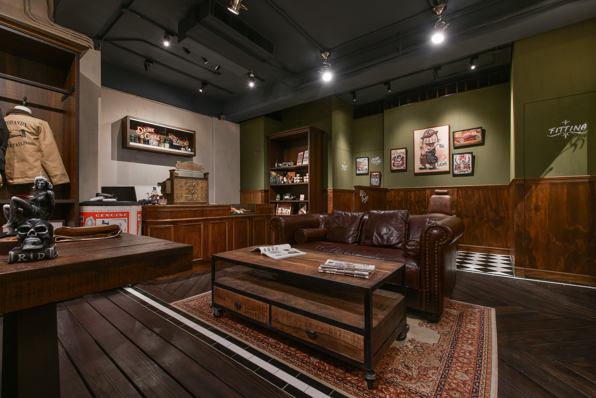

不是做舊，是讓時間住進來。
Not aging artificially — letting time move in.

01
Retrodandy 的街角立面用深色木作與手繪金字招牌還原老派紳裝店的語彙。這不是復古風格的模仿，而是對一種已經消失的零售體驗的重建——推門之前，你已經知道這裡賣的不只是衣服。
Retrodandy's corner facade uses dark woodwork and hand-painted gold lettering to reconstruct the vocabulary of an old-world haberdashery. This is not imitation of vintage style — it is the rebuilding of a retail experience that has disappeared. Before you push the door, you already know this place sells more than clothing.

02
室內以深色木地板與木作展示架構成主要材質系統。橄欖綠牆面在中段接手，讓視覺有了呼吸。陳列不用現代零售的均質邏輯，而是像老店一樣，每個角落有自己的性格——衣架、書冊、收藏品混在一起，讓人想翻、想碰、想停留。
Inside, dark wood floors and timber display units form the primary material system. Olive-green walls take over midway, giving the eye room to breathe. Display follows not modern retail's uniform logic but the old-shop way — each corner has its own character. Racks, books, and collectibles mingle, making you want to browse, touch, and stay.

03
軌道燈從深色天花垂落，光源集中在商品與桌面上，周圍環境退入柔和的暗處。這種打光方式讓每一件商品都像被單獨挑出來展示，而不是淹沒在整片均勻的亮度裡。
Track lights drop from the dark ceiling, concentrating on merchandise and tabletops while the surroundings recede into soft shadow. This lighting makes each product feel individually spotlighted rather than lost in uniform brightness.

04
皮沙發與老地毯定義了一個不屬於銷售的區域——一個讓人坐下來的地方。零售空間裡放一張沙發，不是為了舒適，而是為了時間。當客人願意坐下來，停留的時間就不再是他在計算的事。
A leather sofa and vintage rug define a zone that does not belong to selling — a place to sit. Placing a sofa in a retail space is not about comfort; it is about time. When a customer sits down, the length of the stay stops being something they count.

05
Retrodandy 不是在賣復古，是在賣一種已經不存在的購物體驗——慢的、有溫度的、可以跟店主聊天的。空間設計的工作是讓這種體驗有一個可信的場景。當場景夠真實，故事就不需要解釋。
Retrodandy does not sell vintage — it sells a shopping experience that no longer exists: slow, warm, conversational. The design's job is to give that experience a believable setting. When the setting is real enough, the story needs no explanation.
All Photos